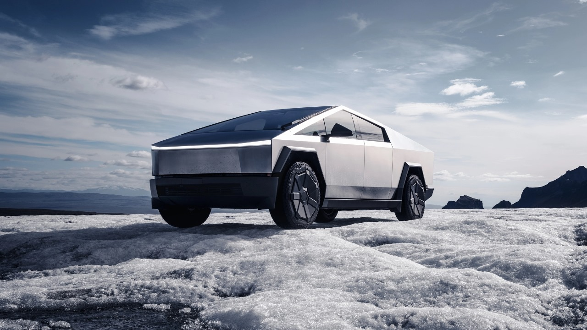
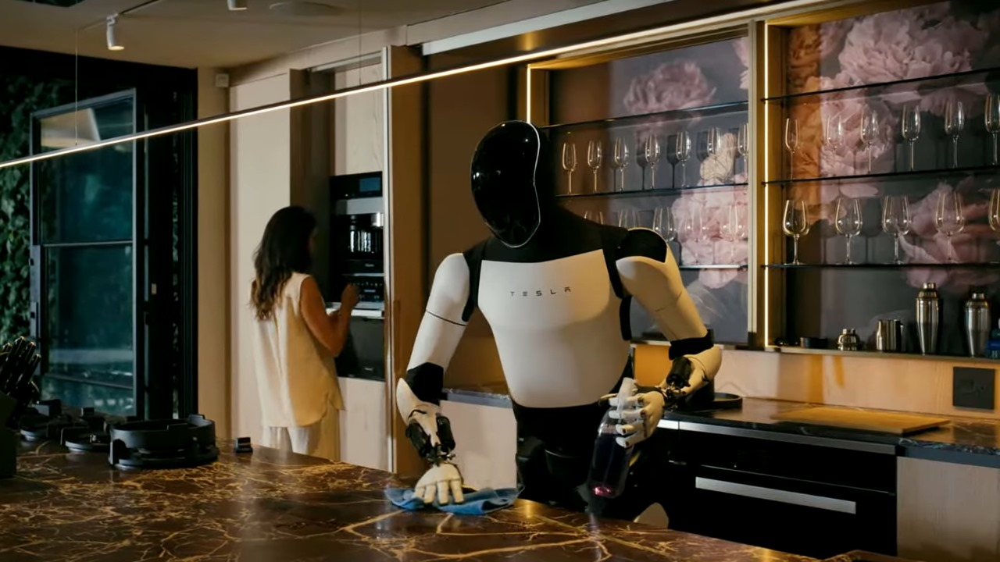

First Blog Post
October 11, 2024 by Jamaal Kerr

Tesla's Cybertruck has undoubtedly captured the world's attention with its futuristic, angular design. This electric pickup truck is a departure from traditional automotive aesthetics, showcasing Tesla's commitment to innovation and pushing the boundaries of vehicle design.
Beyond its striking appearance, the Cybertruck boasts impressive technological advancements. It is equipped with Tesla's Autopilot driver-assistance system, which includes features like automatic steering, lane keeping assist, and adaptive cruise control. The truck also features a robust exoskeleton made from ultra-hard 30X cold-rolled stainless steel, promising exceptional durability and resistance to damage.
Second Blog Post
October 11, 2024 by Jamaal Kerr

Unveiled in 2022, Optimus is designed to perform tasks that are too dangerous, repetitive, or mundane for humans. Equipped with advanced artificial intelligence and actuators, Optimus is capable of walking, climbing stairs, and even lifting heavy objects. Tesla envisions Optimus being used in a variety of industries, from manufacturing to household tasks.
One of Optimus's most notable features is its ability to learn and adapt. Tesla has emphasized that Optimus will be able to improve its skills over time through machine learning algorithms. This means that Optimus will be able to learn new tasks, refine its existing abilities, and become more efficient and effective in its work. Additionally, Optimus is designed to be customizable, allowing it to be tailored to specific needs and environments. With its potential for versatility and adaptability, Optimus could become a valuable asset in various industries and households.